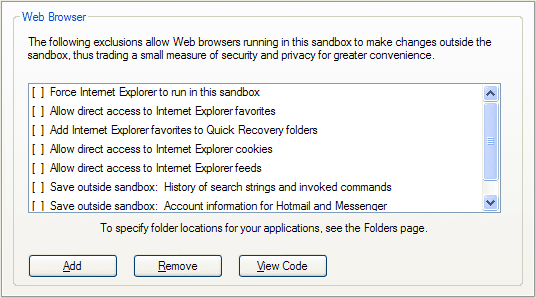
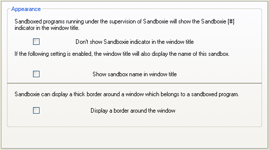

Internet Explorer Tips
Tips Specific to Internet Explorer
Sandboxie Control > Sandbox Settings > Applications > Web Browser > Internet Explorer

Always Run In Sandbox
- Setting: Force Internet Explorer to run in this sandbox
This setting tells Sandboxie to automatically supervise any instance of Internet Explorer as it starts, even if it was not started directly through a Sandboxie facility or command.
Internet Explorer with UAC Enabled
In Windows Vista/7/8/8.1 with UAC enabled, Internet Explorer maintains two sets of configurations: Normal configuration and administrator configuration. Each set contains its own cookies, home pages and some other settings. When you normally launch Internet Explorer, you get the normal configuration. When you right-click Internet Explorer and select the Run as administrator action, you get the administrator configuration.
Under Sandboxie, Internet Explorer selects the Administrator configuration. (But Internet Explorer does not necessarily run as Administrator under Sandboxie.) To fine-tune the administrator configuration, use the Run as administrator right-click action when you run Internet Explorer outside the sandbox.
Windows Update on Windows XP
When you wish to visit the Windows Update web site, you should run Internet Explorer outside the sandbox. If Internet Explorer is forced to always run under Sandboxie (as discussed above), then use the Disable Forced Programs command to disable forced sandboxing before and after visiting the Windows Update web site.
Note the Automatic Updates facility in Windows does not rely on Internet Explorer and should not be affected by any Sandboxie settings related to Internet Explorer. Similarly, the Windows Updates window in Windows Vista also does not rely on Internet Explorer and is also not affected by Sandboxie.
Favorites
- Setting: Allow direct access to Internet Explorer favorites
- Setting: Add Internet Explorer favorites to Quick Recovery folders
These settings allows Internet Explorer running under Sandboxie to store favorites outside the sandbox, so they can persist even after the sandbox is deleted. When this option is not set, favorites are stored only in the sandbox, and will be deleted when the sandbox is deleted.
The first setting (direct access) stores favorites directly outside the sandbox. The second setting (Quick Recovery) initially keeps the favorites in the sandbox but offers to recover (move out of the sandbox) any new favorites as they are added.
The first setting is more flexible in that you can add, edit and delete favorites freely. The second setting is more secure, but at the cost of some measure of convenience.
Bottom line: For greater convenience, select the setting "Allow direct access to Internet Explorer favorites."
Cookies
- Setting: Allow direct access to Internet Explorer cookies
This setting allows Internet Explorer running under Sandboxie to store cookies outside the sandbox, so they can persist even after the sandbox is deleted. When this option is not set, cookies are stored only in the sandbox, and will be deleted when the sandbox is deleted.
An alternative approach is to this setting is to visit your favorite sites once with a normal Internet Explorer, to get these sites to remember you in their cookies. Then switch to an Internet Explorer under Sandboxie, so any new cookies are kept the sandbox until you delete the sandbox.
Bottom line:
- If you regularly delete cookies, and plan to start regularly using Sandboxie, then you can keep this setting unselected, and you will not have to keep regularly deleting cookies.
- If you need web sites that you visit in a sandboxed Internet Explorer to remember you, then select this setting.
Feeds
- Setting: Allow direct access to Internet Explorer feeds
This setting allows Internet Explorer running under Sandboxie to store feed links outside the sandbox, so they can persist even after the sandbox is deleted. When this option is not set, feed links are stored only in the sandbox, and will be deleted when the sandbox is deleted.
Internet Explorer perdiocally checks its feeds from a component which is running outside the web browser. That component will not see (and will not check or refresh) feeds that are created in the sandbox when this setting is not in effect. (Technically, the component is a scheduled task. The task is created and altered whenever you use the Feed Settings tab in the Internet Options dialog.)
Bottom line: If you work with Internet Explorer feeds, it is recommended that you select this setting.
Save Outside Sandbox
- Setting: Save outside sandbox: History of search strings and invoked commands.
- ~~Setting: Save outside sandbox: Account information for Hotmail and Messenger.~~ (replaced with OpenCredentials since Sandboxie v0.8.0 / 5.50.0)
The first setting allows Internet Explorer running under Sandboxie to store "AutoComplete" information, which is typically used for keeping history: History of search strings, or history of commands typed into an input box.
~~The second setting allows Internet Explorer running under Sandboxie to store "Credentials" information, which is typically used by Microsoft web sites, such as Hotmail, to remember your Windows Live ID. It is also used by Windows (Live) Messenger.~~
Bottom line: These settings are concerned with privacy more than security. Information that you enter into web sites can be kept permanently (as with a normal browser) or only until you delete the sandbox. To keep it permanently, select these settings. Otherwise, leave the settings unselected.
General Tips
Automatic Delete Sandbox
Sandboxie Control > Sandbox Settings > Delete > Invocation

- Setting: Automatically delete contents of sandbox
This setting tells Sandboxie to delete the sandbox whenever all programs in the sandbox stop running.
Highlight Windows of Programs Running Under Sandboxie
Sandboxie Control > Sandbox Settings > Appearance Settings

- Setting: Display a border around the window
This setting tells Sandboxie to draw a color border around windows that belong to programs running in this sandbox. The default color is yellow, but you can select a different color for every sandbox.
Alternatively, if you wish to blur the distinction between programs running under the supervision of Sandboxie and those that are not, select the setting "Don't show Sandboxie indicator in the window title."